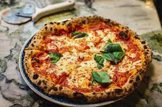

Roman foods you must try!

Pasta Carbonara
Pizza Napoletana
Roman cuisine comes from the Italian city of Rome. It features fresh, seasonal and simply-prepared ingredients from the Roman Campagna. These include peas, globe artichokes and fava beans, shellfish, milk-fed lamb and goat, and cheeses such as Pecorino Romano and ricotta.
best food in rome